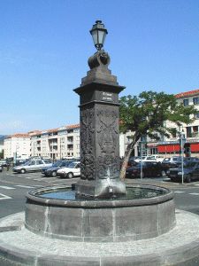
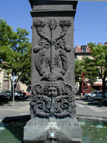
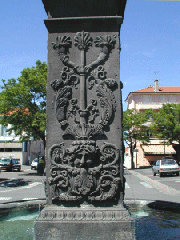
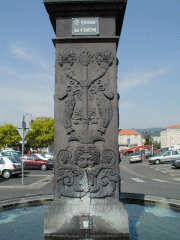
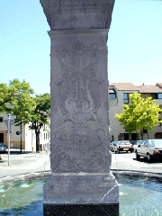

|

A Montferrand, place de la Rodade (ancien foirail dont une partie a été conservée) la "Fontaine des 4 saisons" nous offre 4 faces différentes. L'éclairage n'est évidemment pas favorable aux 4 faces en même temps .... 




Vers le plan
Si vous êtes arrivé directement : entrée du site